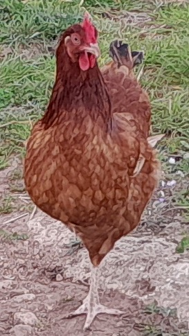

¿Qué animales encontraras?
Vacas
En nuestra finca, nuestras vacas son mucho más que animales; son el alma de nuestro trabajo diario y el pilar fundamental de nuestra producción. Las cuidamos con esmero, asegurándonos de que reciban la mejor alimentación y vivan en un entorno natural, tranquilo y saludable. Cada día, nuestras vacas nos ofrecen una leche fresca y de altísima calidad, fruto del cuidado y el respeto que les brindamos. Este compromiso no solo garantiza un producto excepcional, sino que también refleja nuestra pasión por la tradición y el amor por la naturaleza. Ven y descubre cómo nuestras vacas juegan un papel esencial en la creación de productos que llevan consigo el auténtico sabor de nuestra tierra.
En nuestra finca, la tradición y el amor por la naturaleza se convierten en el motor de nuestro trabajo diario. Con dedicación y cuidado, ordeñamos nuestras vacas para ofrecer una leche fresca, pura y de altísima calidad, fruto del esfuerzo y respeto por nuestras tierras. Esta leche excepcional forma parte de una colaboración especial con La Payesa, una empresa que reúne lo mejor de nuestra finca y otras fincas locales para crear un queso único y lleno de tradición. Con pasión y maestría, transforman la leche en un producto que refleja los auténticos sabores de nuestra región. Te invitamos a conocer más sobre el magnífico trabajo de La Payesa a través de su siguiente video. ¡Déjate conquistar por el arte de convertir nuestra leche en un queso extraordinario!
Cerdos
La cría y el cuidado de nuestros animales son una parte esencial de nuestra labor. Contamos con cerdas que alimentamos cuidadosamente con suero de leche, proporcionándoles una nutrición equilibrada para garantizar su bienestar y una crianza saludable. Por otro lado, tenemos los cerdos de engorde, que son el núcleo de nuestra producción de embutidos. Su alimentación, basada en cebada, se selecciona con esmero para asegurar una calidad excepcional y un sabor auténtico en cada producto. Desde el inicio de su cuidado hasta la elaboración de embutidos, nuestro proceso refleja la dedicación a la tradición y el respeto por nuestras raíces.
Gallinas
Nuestras gallinas disfrutan de una vida en libertad, pastando al aire libre y explorando el entorno natural que las rodea. Este cuidado y su forma de vida saludable se reflejan en la calidad y frescura de los huevos que nos ofrecen cada día, auténticos y llenos de sabor.
